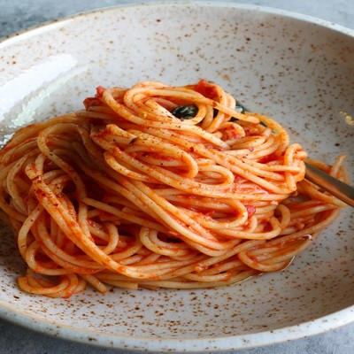

Spaghetti

Description
One of the first things I learn to cook was spaghetti, so I decided that I would use this as one of the recipes for my project!
It is a pretty normal spaghetti recipe, but please enjoy!
Ingredients
- 1 pound ground beef
You gotta season your meat! Here is what I use personally
- 1 tbsp Morton Season all
- 1 tsp onion powder
- 1 tbsp garlic salt
- 1 tbsp garlic powder
- 1 tsp salt
- 1 tsp pepper
- 12 ounces of spaghetti noodles
- Spaghetti sauce of your choice
- Butter
- Italian seasoning
Steps
- Season your meat.
- Brown your meat, while bringing a large pot of water to a boil
- Once your meat has cooked through, remove your meat from the oven, and strain the grease, return to stove and add pasta sauce, bring to a low simmer.
- While the sauce is coming to a simmer, add your noodles to the pot of water, along with 1/8 cup of italian seasoning.
- Once your noodles are cooked through, strain them, and add butter, mixing it in to stop them from sticking.
- Serve!
Home